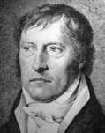

Philosophy Pages
| Dictionary | Study Guide | Logic | F A Q s | ||
|---|---|---|---|---|---|---|
| History | Timeline | Philosophers | Locke | |||
| Philosophy Pages
| Dictionary | Study Guide | Logic | F A Q s | ||
|---|---|---|---|---|---|---|
| History | Timeline | Philosophers | Locke | |||

|
Life and Works . . Dialectic . . Subjective . . Objective . . Absolute Bibliography Internet Sources |
Born in Stuttgart and educated in Tübingen, Georg Wilhelm Friedrich Hegel devoted his life wholly to academic pursuits, teaching at Jena, Nuremberg, Heidelberg, and Berlin.
His Wissenschaft der Logik
(Science of Logic) (1812-1816) attributes the unfolding of concepts of reality in terms of the pattern of
dialectical reasoning
(thesis — antithesis — synthesis) that Hegel believed to be the only method of progress in human thought, and
Die Encyclopädie der philosophischen Wissenschaften im Grundrisse (Encyclopedia of the Philosophical Sciences) (1817) describes the application of this dialectic to all areas of human knowledge.
 Hegel's Naturrecht und Staatswissenschaft im Grundrisse and Gundlinien der Philosophie des Rechts (Philosophy of Right) (1820) provide an intellectual foundation for modern nationalism.
Hegel's Naturrecht und Staatswissenschaft im Grundrisse and Gundlinien der Philosophie des Rechts (Philosophy of Right) (1820) provide an intellectual foundation for modern nationalism.
Hegel's absolute idealism is evident even in the early Phänomenologie des Geistes  (Phenomenology of Mind) (1807). There Hegel criticized the traditional epistemological distinction of objective from subjective and offered his own dialectical account of the development of consciousness from individual sensation through social concern with ethics and politics to the pure consciousness of the World-Spirit in art, religion, and philosophy. The result is a comprehensive world-view that encompasses the historical development of civilization in all of its forms.
|
Recommended Reading:
Primary sources:
Secondary sources:
Additional on-line information about Hegel includes:
|